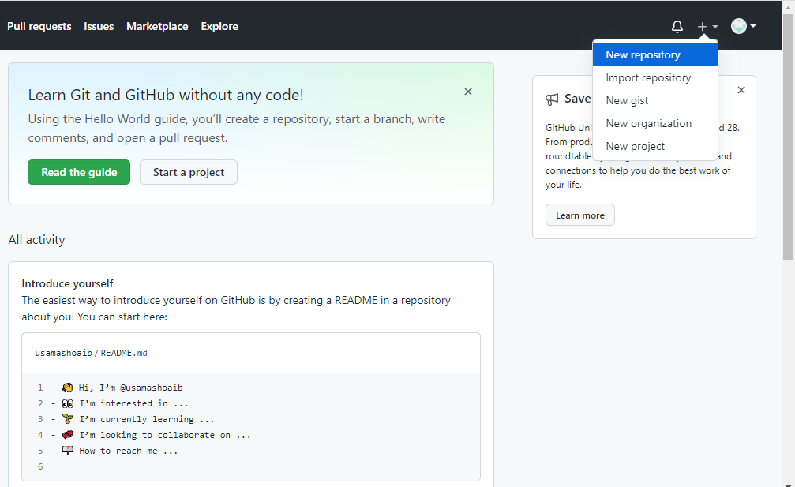
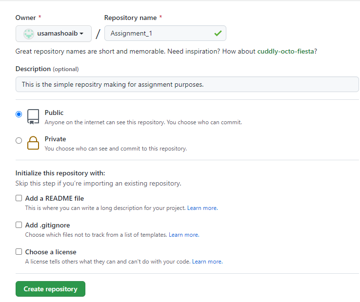
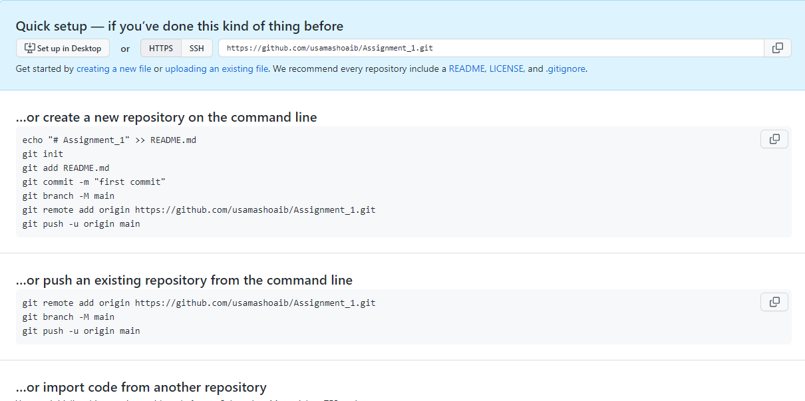
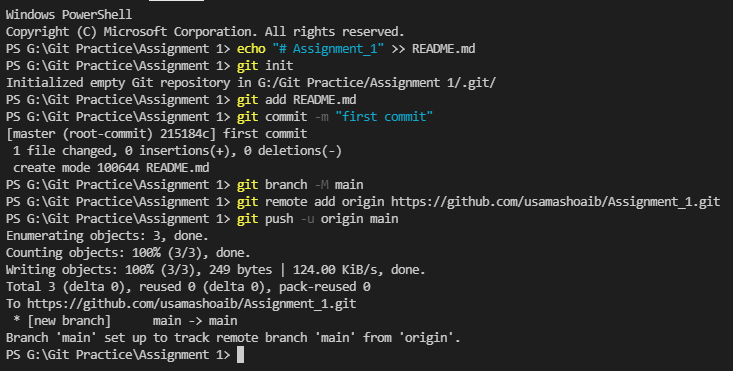

Assignment 1 of Mobile Computing
First sign up on github.com then make new repstery
by clicking on the '+' button on top right
corner

A page will occur. In the page, fill the name of the repositry and you also can add read me and get
ignore file or a license

A page will occur, it will guide you about next steps

Make a local repoitry following the given steps
